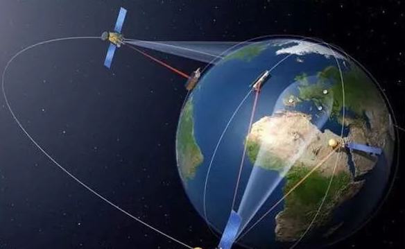
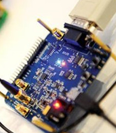

-
北斗卫星导航系统介绍
-
星历星座
-
监测评估
-
北斗三号基本系统建成及提供全球服务情况发布会召开

我国成功发射第四十二、四十三颗北斗导航卫星
要闻
- 新闻中心
- 行业动态
- 国际动态
- 我国代表赴美参加2019年美国导航学会环太平洋PNT会议04-13
- 关于开展2019年度北斗卫星导航领域国家标准申报工作的通知04-10
- 孙家栋：书写北斗传奇04-09
- 人民日报海外版：北斗卫星闪耀一带一路04-08
- 中阿北斗合作掀起2019年首个北斗系统关注热潮04-08
- 阿盟国家信息通信技术部部长一行参观中阿北斗中心04-04

- 北斗/GNSS监测系统提前两天预警甘肃黄土滑坡，无人伤亡03-29
- 广西北海：北斗系统促进向海经济发展03-29
- 山东青岛：北斗导航无人驾驶助力蔬菜机械化生产03-29
- 北斗高精度赋能“机器人”，服务立体化智能农业03-28
- 成都：北斗为智能农机装上信息化大脑03-22
- 北斗助春耕 种田更轻松03-21

- 欧洲：伽利略系统参考中心启用05-18
- 印度成功发射导航卫星IRNSS-1I04-13
- 外媒：中美卫星导航合作，为用户提供更好服务12-15
- 欧洲：伽利略系统4颗新卫星升空12-23
- 下一批GPS卫星被命名为GPS-IIIF11-29
- 日本：发射第四颗准天顶卫星10-13
产业

- 合众思壮与中国民航二所签订合作协议，共推北斗民航应用04-12
- 济南：发布地理信息产业规划，打造北斗产业集群03-18
- 公交车还能和红绿灯“聊天”？北斗高精度让梦想照进现实03-13
- 成立创新中心，推动北斗系统深化应用03-06
- 刘经南院士：紧抓机遇，实现北斗产业爆发式增长02-08
- 凝聚中国航天智慧，北斗拉动经济发展12-18


政策法规
- 济南：发布地理信息产业规划，打造北斗产业集群03-18
- 江苏：引导快递企业使用北斗技术07-27
- 规范北斗名称使用势在必行05-31
- 杨君琳：为北斗插上法治翅膀05-31
- 立法保障北斗系统健康发展05-31
- 湖南：利用北斗实现地灾专业监测04-18